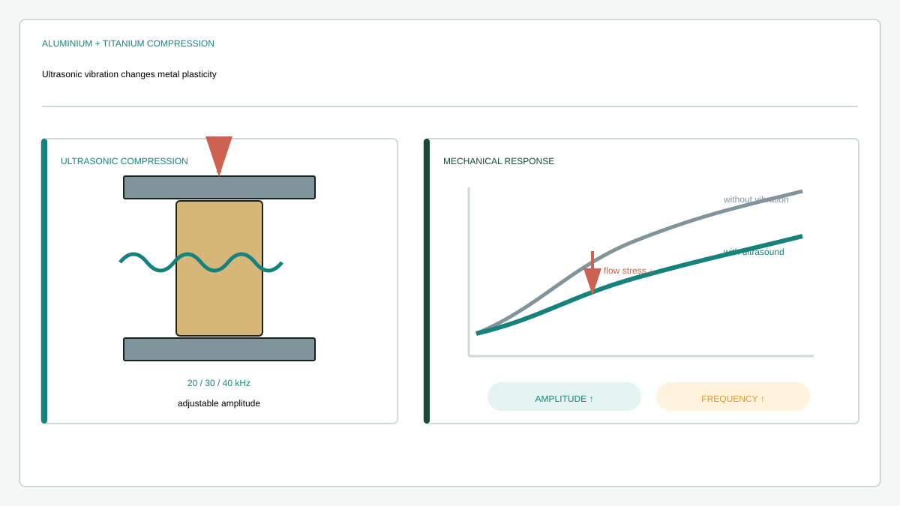

Journal article
Influence of ultrasonic vibration on the plasticity of metals during compression process
Research at a glance
{kind=link}

Abstract
In this study, the influence of ultrasonic vibration on the plasticity of lightweight metals (aluminium and titanium) was investigated by means of ultrasonic assisted compression (UAC) experiments. The experiments were carried out based on the newly designed ultrasonic horns and transducers which can generate a series of vibration frequencies (20, 30 and 40 kHz) and adjustable vibration amplitudes (4.06 –10.37 μm). It is found that, the ultrasonic vibration can reduce flow stress during UAC process for both aluminium and titanium, a phenomenon referred as ultrasonic softening effect. Different vibration amplitude and frequencies were specifically altered for observing the ultrasonic softening effect. The result is: in the range from 20 to 40 kHz the ultrasonic softening effect can be enhanced by increasing the vibration amplitude; however, increasing vibration frequency will decrease the ultrasonic softening effect, which is different from the previous acceptance stating that the vibration frequency (from 18 kHz to 80 kHz) has no influence on the ultrasonic softening effect. Apart from the ultrasonic softening effect, it is also found that the ultrasonic vibration can lead to residual hardening effect to aluminium and residual softening effect to the titanium. The influence of experiment parameters to the ultrasonic softening and residual effect during the UAC were assessed quantitatively and individually. These parameters include vibration frequency and amplitude, vibration duration as well as the sample size. Based on the UAC test within the elastic deformation stage, the mechanism of ultrasonic softening effect was explained from the occurrence of the unload phenomenon caused by ultrasonic vibration induced localized deformation. To validate the proposed mechanism, nanoindentation and electron backscatter diffraction (EBSD) test were carried out. According to the test result, ultrasonic vibration can induce plastic deformation and refine the grains for both aluminium and titanium sample. And for aluminium sample, comparing with the grains in the sample centre, the grains in the sample up boarder area are more sensitive to the ultrasonic vibration in terms of grain refinement, while for the titanium it is on the contrary.
Keywords
Recommended citation
Haiyang Zhou, Hongzhi Cui, and Qing H. Qin (2018). Influence of ultrasonic vibration on the plasticity of metals during compression process. Journal of Materials Processing Technology, 251, 146–159. https://doi.org/10.1016/j.jmatprotec.2017.08.021